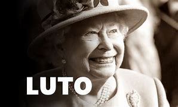

Rainha Elizabeth II, a monarca britânica mais longeva da história, morre aos 96 anos

Com a morte de Elizabeth, seu filho mais velho, o agora rei Charles, assume o trono do Reino Unido e de outros 14 países que têm o monarca britânico como chefe de Estado, como Austrália e Canadá. Segundo os ritos oficiais, o sucessor no trono tinha algumas opções na escolha do nome que iria adotar, mas acabou seguindo o caminho tradicional e manteve o título de rei Charles III.
Em seu primeiro comunicado oficial como rei, Charles III disse que "a morte da minha amada mãe, Sua Majestade a Rainha, é um momento de grande tristeza para mim e para todos os membros da minha família".
Os quatro filhos da rainha Charles, Anne, Andrew e Edward foram até a Escócia quando foi anunciado que a monarca estava sob supervisão médica. Neto de Elizabeth II, o príncipe William também foi até o castelo de Balmoral. Na tarde desta quinta, veio a notícia da morte.
Elizabeth II tornou-se rainha aos 25 anos de idade, em 1952, após a morte do pai, o rei George VI, e foi coroada no ano seguinte. Na época, o primeiro-ministro era Winston Churchill. Ao longo de seu reinado, ela conheceu 15 premiês.
Embora fosse oficialmente chefe de Estado, a monarca teve papel mais formal e cerimonial. Neutra em assuntos políticos, ela testemunhou eventos históricos, como a desintegração do império britânico, as mudanças sociais do pós-guerra, a Guerra Fria e o Brexit.
Em 1997, viu sua relação com os britânicos ser abalada após a morte de Diana, ex-mulher de Charles. Na ocasião, a rainha foi criticada por sua reação vista como fria e distante.
Os casamentos de William, em 2011, e de Harry, em 2018, serviram para modernizar a imagem da família real, mas pouco depois veio um novo baque: Andrew, considerado o filho favorito da monarca, escandalizou o Reino Unido por causa de sua amizade com o milionário americano Jeffrey Esptein, acusado de exploração sexual de menores.
Em 2020, houve uma nova polêmica, com a mudança de Harry e da mulher, Meghan Markle, para os Estados Unidos (no ano seguinte, o casal se desvincularia profissionalmente da coroa britânica).
Viúva do príncipe Philip, que morreu em abril de 2021 aos 99 anos, Elizabeth II deixa oito netos, incluindo os príncipes William e Harry, e 12 bisnetos.